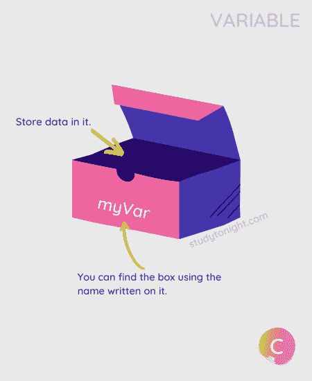
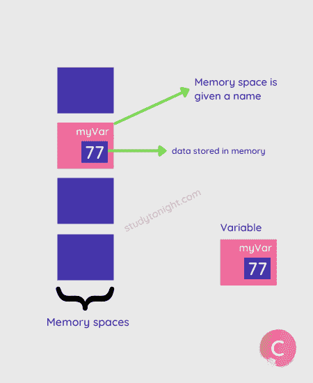
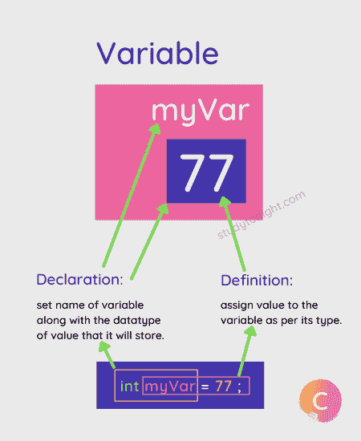

变量示例
在本教程中，我们将学习什么是变量，如何在 C 语言中声明和定义变量，以及在 C 语言中什么是常量和字面值。
变量就像一个容器(存储空间)，它有一个名称，您可以在其中存储数据。

就像你家有地址(门牌号/公寓号)，所以无论什么时候你在网上点东西，只要提供你家地址，送货主管就能找到。
在 C 语言中，如果我们想在我们的程序中使用一些数据值，该怎么做呢？这是用变量完成的。
当我们在 C 程序中创建一个变量时，C 编译器根据变量的数据类型分配一个存储空间(8 位用于char，16/32 位用于int等)。)，然后该存储空间被赋予一个名称，即变量名。

一旦创建了一个变量，我们就可以在其中存储值。我们可以根据需要多次更改变量中存储的值，但是我们应该确保存储正确的数据类型值。
使用变量的语法:
下面是如何在 C 语言中创建或声明一个新的变量，
data_type var_name;
其中，数据类型是一个有效数据类型(如果需要的话，还有数据类型修饰符),而 var_name 是变量的名称。
例如，
int marks;
这里，marks是变量的名称，可以存储int类型的值。
一旦我们声明或创建了变量，我们就可以给它赋值。这叫做变量定义。
// variable declaration
int marks;
// variable definition
marks = 10;
我们也可以在一个步骤中完成的声明和定义，就像这样(推荐)。
int marks = 10;

您可以随时更改变量的值。但是要确保值是正确的数据类型。
// variable defined
int marks = 10;
// assign a new value
marks = 33;
变量的数据类型
C 语言中的一个变量必须给定一个类型，这个类型定义了变量中可以存储什么类型的数据。如果不提供任何数据类型，那么 C 编译器会给出编译时错误或语法错误。
数据类型可以是char、int、float、double或short、int、long、int等。数据类型以及修饰符。
可以了解 C 数据类型 查看 C 语言支持的各种数据类型列表。
让我们举个例子，
// char type variable
char status = 'Y';
// int type variable
int marks = 95;
// float type variable
float percentage = 94.6;
// double type variable
double long = 76.997429;
如果你试图给一个变量分配一个不正确的数据类型值，那么编译器可能会给出错误，或者它会自动将该值转换成变量的数据类型。
**例如，
#include <stdio.h>
int main() {
// assign incorrect value
int x = 10.58;
printf("Value is %d", x);
return 0;
}
值为 10
正如您在输出中看到的，C 编译器删除了小数之后的部分，因为int数据类型只能存储整数。
我们将在下一个教程中学习printf()函数和%d(用于打印int数据类型的值)，并提供更多的代码示例。
不能更改数据类型
一旦我们用某种数据类型定义了一个变量，那么我们就不能改变该变量的数据类型。
例如，
// int variable
int marks = 10;
float marks; // error
命名变量的规则
当您创建一个变量时，您应该总是给这个变量一个有意义的名称。并遵循以下规则命名变量:
变量名不能以数字开头。
变量名可以由字母、数字和特殊符号组成，如下划线
_。变量名中不允许有空格。
关键字不允许作为变量名。
大小写名称视为不同，因为 C 区分大小写，建议变量名保留小写。
根据上面的规则，让我们看几个错误名称的例子:
int 1var; // incorrect - should not start with number
int var1; // correct
int my$var // incorrect - special characters not allowed
int my_var1; // correct
int my var; // incorrect - spaces not allowed
char else; // can't use Keywords
int count; // valid variable name
int Count; // new variable
int COUNT; // new variable
创建变量-幕后
变量的声明必须在程序中使用之前完成。声明做了以下事情。
它告诉编译器变量名是什么。
它指定变量将保存什么类型的数据。
在定义变量之前，编译器不必担心给变量分配内存空间。
该声明更像是通知编译器程序中使用了具有以下数据类型的变量。
我们甚至可以在
main()函数之外声明一个变量，使用extern关键字。
extern int a;
extern float b;
extern double c, d;
定义或初始化一个变量意味着编译器现在必须为该变量分配存储空间，因为它将在程序中使用。
我们甚至可以通过使用逗号将同一数据类型的多个变量分开，在一行中声明它们。
例如，
int a;
float b, c;
初始化一个变量意味着给它提供一个值。
int a = 10;
变量和标识符的区别？
标识符是编程语言中任何变量、函数、结构、指针或任何其他实体的名称。正如我们在本教程中刚刚学到的，变量是一个命名的内存位置，用于存储程序中使用的数据。
| 标识符 | 可变的 | | 标识符是赋予变量、函数等的名称。 | 而变量用于命名存储数据的内存位置。 | | 标识符可以是变量，但不是所有的标识符都是变量。 | 所有变量名都是标识符。 | | 示例:
// studytonight is identifier for a variable
int studytonight;
// studytonight is identifier for a function
int studytonight() {
...
}
| 示例:
// int variable
int a;
// float variable
float a;
|
理解标识符和变量之间区别的另一个很好的类比是:
你可以认为标识符int x是一个变量的名称，但是它也可以是一个函数的名称int x() { }，并且仍然是一个标识符。
就像奥巴马是一个人的名字，也是一个基金会的名字。
结论
在本教程中，我们学习了 C 变量，如何创建变量，给变量赋值，以及创建变量后会发生什么。我们还了解了创建新变量时数据类型的重要性。